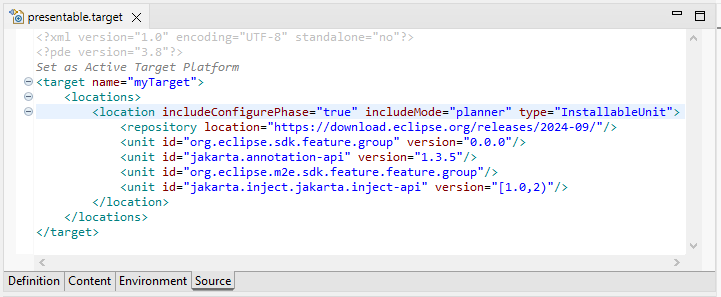
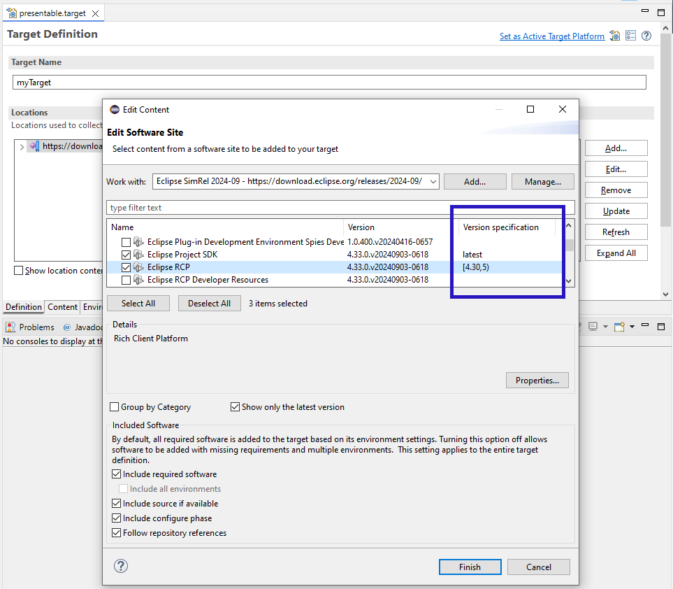

Editors |
|
| Support for version ranges and omitted versions in IU target locations |
In the PDE Target Editor it is now possible to specify a range as the version of a unit or to omit the specification of a version attribute entirely in InstallableUnit locations.
Without an explicit version the value 0.0.0 is used by default, which always resolves to the latest version available.
All of the following variants to specify a version in the Source tab of the Target Editor are now possible:
 It is also possible to define these advanced versions specifications through the UI of the Target Editor. After clicking theEdit button for a location, you can specify a version range for a selected unit directly in the table.
Entering latest is equivalent to 0.0.0 and resolves to the latest version of that unit.
 |